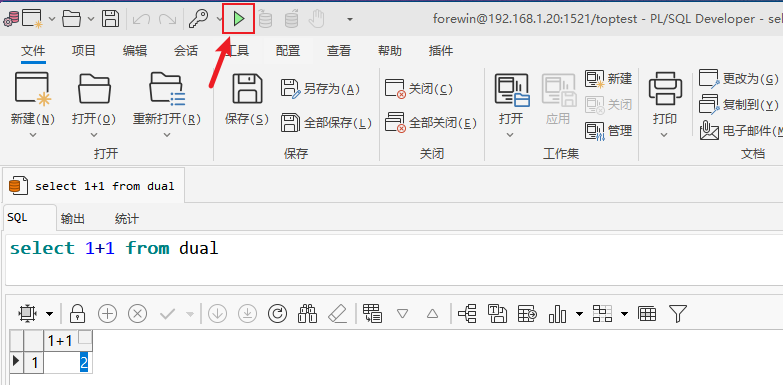

环境准备 #
在服务器端可以运行所有功能，但是编辑和排错非常曲折，所以我们推荐使用本地工具连接ORACLE数据库。
连接数据库，我们需要客户端与官方驱动：
驱动 #
官方驱动，选择对应版本驱动
驱动版本位数和客户端要保持一致，要么全都64位，要么全都32位。
-
位数：本次我们都选择64位
-
版本：本次我们选择
12.2.0.1.0版本
GP5.3 对应的数据版本为11.2.0.3.0，我们可以选择此版本以上的驱动，高版本可以兼容低版本。

- 解压：将下载的压缩文件解压到一个文件夹中，后续要用到
本次我们解压位置是D:\app\oracle\instantclient_12_1
客户端 #
我们选择
PLSQL Developer，还可以选择NVICAT、Toad for Oracle等
- 下载地址： Download

- 输入注册码：第一次打开不要登陆，会提示输入注册码，如果没有提示，通过这里打开
- 设置语言：设置语言为中文

- 设置驱动位置：设置之前解压的驱动文件夹位置
- 登陆：点击此按钮，或者重新打开软件，即可登陆

- 测试：新增SQL文件，输入内容，点击执行按钮，如果一下内容说明连接成功

SQL*Plus 客户端 #
SQL*Plus 客户端，是
ORACLE官方提供的命令行客户端，可以使用命令行连接数据库
在运维时，我们偶尔需要连接
SQL*Plus客户端，所以要知道如何简单使用
在数据库服务器和EPR服务器都安装好了SQL*Plus客户端，所以可以直接使用。
- 连接命令
sqlplus [username]/[password]@[host]:[port]/[sid]
sqlplus system/password@topprod
sqlplus / as sysdba
- 退出命令
quit
SQL*Plus中运行的SQL语句需要提交（
commit;）并以;作为结束。